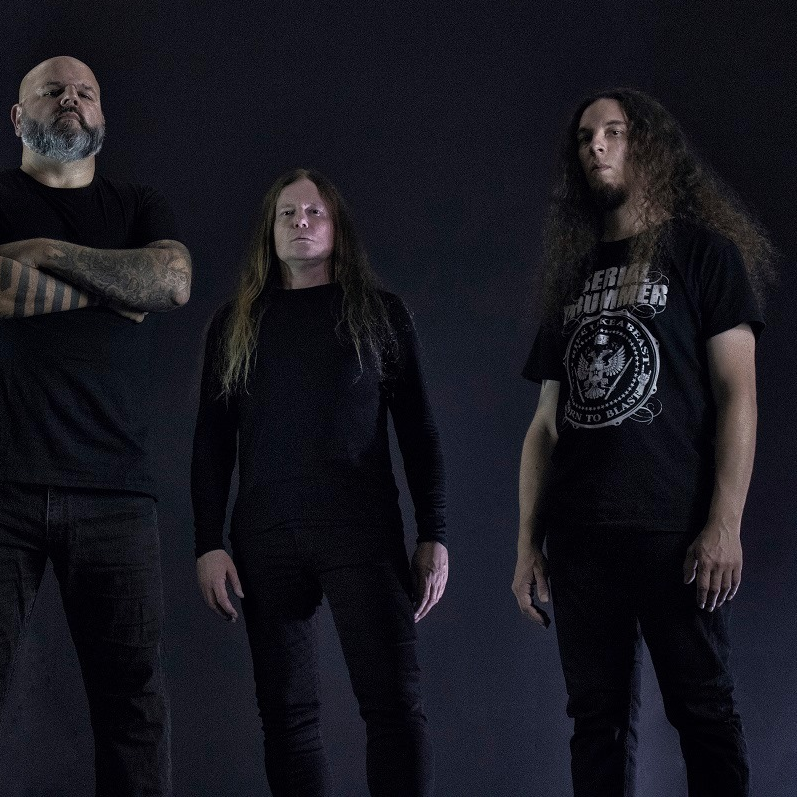

Nie tylko grzmocić

na boku projekt, w którym graliśmy bardzo dziwne fusion.
Wstrzymaliśmy jednak tę inicjatywę, bo pochłaniały nas
ważniejsze zespoły.
MH: I tak oto Sadist stał się międzynarodowym składem
rozrzuconym pomiędzy Włochami, Holandia i Francją.
TT: Każdy pracował nad przedprodukcją własnych partii
w swoim domowym studiu, a później dużo czasu spędziliśmy
na rozmowach przez telefon. Dużo rozmawialiśmy nie tylko
o muzyce, ale i o strategii zespołu. Na przykład to Jeroen był
w kontakcie z Agonia Records, on odnalazł tę wytwórnię.
To również dowodzi, że facet naprawdę zaangażował się
w sprawy zespołu, że wyszedł śmiało poza rolę muzyka
sesyjnego. Wprawdzie mieszkamy w różnych państwach,
ale żyjemy w cyfrowej epoce, więc nie jest źle. Na co dzień
pracuję w studiu, zdarza mi się miksować nagrania zespołów
z wielu krajów. Taki zespół musi mi po prostu przesłać ścieżki,
a później zaopiniować efekty mojej pracy. Świat się zmienił,
nie jest już taki jak przed epoką Internetu. Nie twierdzę,
że to lepiej. Nie twierdzę również, że to gorzej. Po prostu jest
inaczej, i już. Trzeba się zaadaptować. W trybie podobnym
do Sadist pracuje teraz wiele zespołów, których członkowie
mieszkają w tym samym państwie. Wiadomo: jak ktoś nie ma
już dwudziestu lat, to nie może sobie pozwolić na niekończące
się próby. Ja akurat zajmuję się zawodowo tylko muzyką,
ale spędzam każdego dnia po osiem godzin w studiu, co moż-
na by porównać do roboty w biurze.
MM: Sadist zawsze miał wyraźną
skłonność do łączenia wątków
intensywnych z subtelnymi, ale na
,,Firescorched" ujawnia się to chy-
ba jeszcze mocniej niż kiedyś,
może ze względu na to, że frag-
menty ostre bywają ostrzejsze
niż zwykle. Miałeś sprecyzowany
pomysł na łączenie skrajności?
TT:Znajdowaliśmy równowagę plyta
po płycie. Mamy w dorobku albumy,
które wychylają się bardziej ku agre-
sji, jak na przykład "Crust". Są płyty
o zabarwieniu bardziej progresyw-
nym albo jazzowym, jak chociażby
,,Sadist". Są wreszcie płyty bardzie
eksperymentalne - tu mógłbym walon
zać "Hyaena". To są odmienne źródła
inspiracji, ale każdę z nich składa
się na brzmienie Sadist. W związku
z tym równowagę odnajdywaliśmy
przy każdej próbie konfigurowania
tych wpływów. Czasem wychodziło
nam lepiej, a czasem... dziwniej. Zda
sobie sprawę, że zdarzało nam się
robić rzeczy nietypowe. "Tribe" ukazał
się w połowie lat dziewięćdziesiątych,
a na nim utwór, w którym główny
riff nie jest nawet prowadzony przez
gitarę, tylko przez keyboard. A jednak
do tego podkładu wokalista drze się
jak opętany. Przyznam, że wielu ludzi
tego nie rozumiało. Tym razem sku-
piliśmy się bardziej niż kiedykolwiek
na piosenkach. Zawsze mi na nich
zależało, ale teraz jeszcze bardziej.
Ilekroć biorę się do pisania, chcę
stworzyć dobrą piosenkę. Nieważne,
czy grasz metal, pop czy hip-hop -
liczy się wartość piosenki. Oczywiście
nie twierdzę, że piszemy najwspa-
nialsze kawałki w historii, zwłaszcza
że tu tylko czas może być sędzią.
Jeśli za dziesięć lat ktoś będzie chciał
grać któryś z naszych kawałków, to
prawdopodobnie będzie to oznaczało,
że coś nam wyszło (śmiech). Uważam,
że świat nie potrzebuje kolejnych
gitarowych wymiataczy, natomiast
miejsce dla dobrych piosenek zawsze
się znajdzie.
MH: Jesteś nie tylko gitarzystą,
ale i klawiszowcem. W twoich par-
tiach wygrywanych na klawiaturze
słyszę tropy zarówno rocka pro-
gresywnego lat siedemdziesiątych
jak i ścieżek dźwiękowych filmów.
To trafne skojarzenia?
TT: Tak. Dorastałem przy dźwiękach
kapel takich jak Emerson, Lake &
Palmer, Yes albo Goblin. Kiedy zainte-
resowałem się metalem, moją uwagę
zwracały przede wszystkim te zespoły,
które były w stanie pożenić agresję
i mrok z graniem nieszablonowym.
Kiedy po raz pierwszy usłyszałem
"Focus" Cynic, uznałem, że to niesa-
mowita rzecz, zwłaszcza w wykonaniu
kapeli metalowej. W każdym razie
wątki progresywne w muzyce Sadist
wzięły się i stąd, że już jako dzie-
ciak zacząłem naukę gry na gitarze
klasycznej. Co ciekawe, porzuciłem
lekcje, kiedy poznałem rocka i metal.
Od tamtej pory wolałem robić hałas za
pomocą gitary elektrycznej. Poznałem
Van Halen i Yngwiego Malmsteena,
ale również Slayer. Slayer sprawił, że
oszalałem. Dla mnie to wciąż jest naj-
bardziej agresywny zespół w historii.
Nie potrafię wskazać żadnego zespołu
z nurtu brutalnego death metalu,
który by się do nich zbliżyl.
MH: Początek pierwszego na no-
wej płycie utworu "Accabadora"
wyśpiewany jest po włosku.
O czym jest ten fragment?
TT: To nie po włosku, tylko sardyn-
sku. Wbrew pozorom to nie są tak
zbliżone języki, jak mogłoby się wy-
dawać. Gdybym nie miał tłumaczenia,
sam bym nie zrozumiał. Musieliśmy
znaleźć wokalistkę z Sardynii, która
nagrałaby dla nas tę część. Tekst
opowiada o legendzie, według której
do umierającej osoby mogła przyjść
kobieta, która świadczyła usługę, po-
wiedzmy, eutanazji. Uderzała chorego
w głowę drewnianym młotkiem. Była
wzywana przez rodziców chorego,
ale dlatego, że nie chcieli, by wydłużać
jego cierpienie. Niektórzy twierdzą,
że to tylko lokalny folklor, legenda,
ale inni z kolei utrzymują, że takie ko-
biety rzeczywiście istniały na Sardynii.
I to przed stu a nawet pięćdziesięcio-
ma laty. Tak czy inaczej, temat nas
zainteresował, więc napisaliśmy o nim
tekst, zwłaszcza że dawał nam on
pretekst, by wyeksponować element
etniczny, to znaczy zaangażować
wokalistkę z Sardynii. Skoro istnieje
tyle zespołów blackmetalowych, które
śpiewają po norwesku, to dlaczego
my nie możemy pośpiewać sobie po
sardyńsku (śmiech)?
Sadist 49